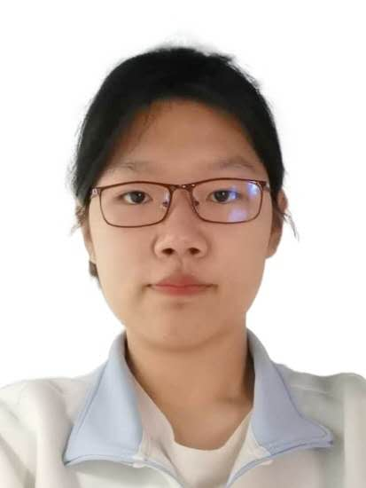
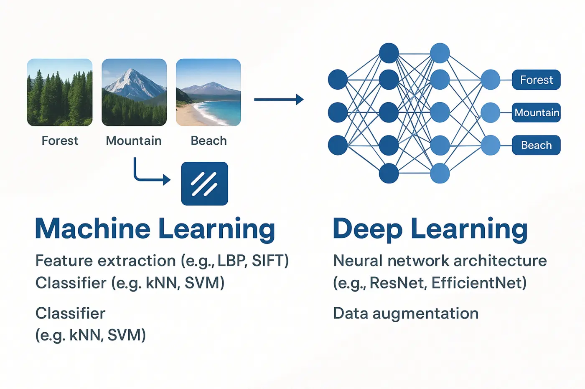
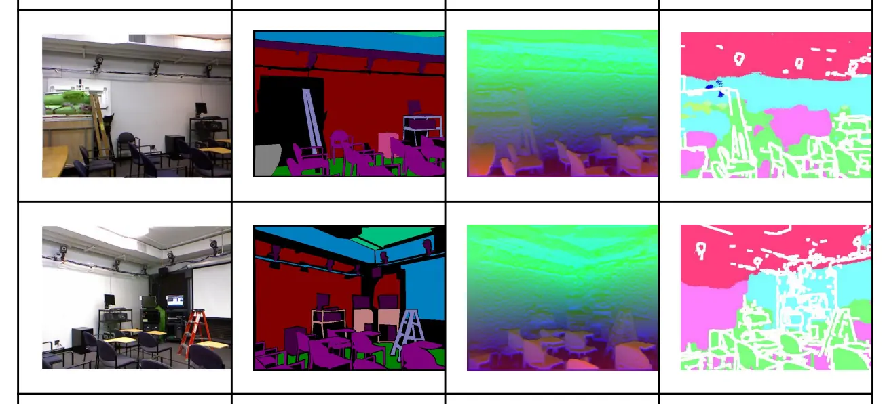
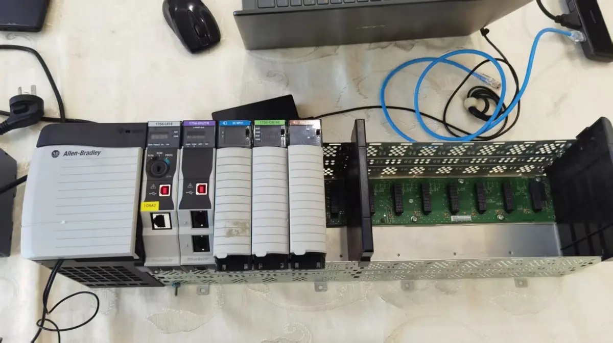

Robust vision-guided control
Combining probabilistic perception with adaptive control to handle uncertainty, occlusion, lighting variation and external disturbances.

Master of Engineering Science in Robotics at UNSW and a Bachelor of Engineering in Artificial Intelligence from Capital Normal University, working across autonomous robotics, computer vision, robust control and machine learning.
From perception to dependable autonomy.
Combining probabilistic perception with adaptive control to handle uncertainty, occlusion, lighting variation and external disturbances.
Exploring sample-efficient learning and simulation-to-reality transfer for controllers that generalise beyond a single test environment.
Designing certified, shared-progress supervision that keeps multi-humanoid and multi-robot teams synchronised without sacrificing low-level tracking performance.
Research made tangible.
A low-cost, infrastructure-independent landing system built with ROS 2 Humble and Gazebo Harmonic. A nested ArUco-marker perception strategy, nonlinear disturbance observer and adaptive SMC-based controller support precise landing under ground effect and lateral wind.
Paper: Quadcopter-ChargingDocking-Station-with-Auto-Landing.pdf
A high-level shared-progress supervisor that coordinates paired humanoids carrying a shared payload, instead of modifying the low-level robot tracker. It preserves the demonstrated relative phase between robots while avoiding coordination failures caused by rigid fixed-clock playback.
Design, perception and control.
Autonomous mapping and shortest-path navigation using Flood Fill and BFS, reducing navigation time by 15% in test mazes. PID motor control was tuned for stable movement across uneven maze surfaces, supported by full hardware assembly and system debugging over 20+ consecutive runs.

Compared handcrafted-feature Random Forest models with fine-tuned ResNet18 and EfficientNet across 15 aerial scene categories, analysing the trade-off between model complexity and real-time applicability for robotic aerial surveillance.

Converted RGB-D input into HHA-encoded point clouds, built graph structures with KNN, and applied graph neural networks to indoor semantic segmentation.

Homography and ArUco calibration, custom inverse kinematics, artificial potential field path planning and RTDE control for precise pick-and-place.
Robotics in industry.
Built a millisecond-level software SOE module for Logix5000 PLCs, replacing dedicated SOE hardware with unlimited-point, reusable event recording. Developed a hybrid A* and dynamic-programming routing algorithm for multi-zone automotive PBS conveyor scheduling, validated with control engineers for PLC compatibility.
Academic journey.
Completed with an 86.5 WAM. Coursework includes Advanced Autonomous Systems (98), Control of Robotic Systems (92), Feedback Control Systems (92), Robust & Linear Control, and Robot Design.
Built foundations in machine learning, operating systems, algorithms, natural language processing and intelligent robot simulation. GPA 3.19/5.0.
Third Prize, University-Level Programming Competition · Third-Class Scholarship
Contact
I am committed to conducting scientific research that advances robotics.
YitingLiang1122@outlook.com